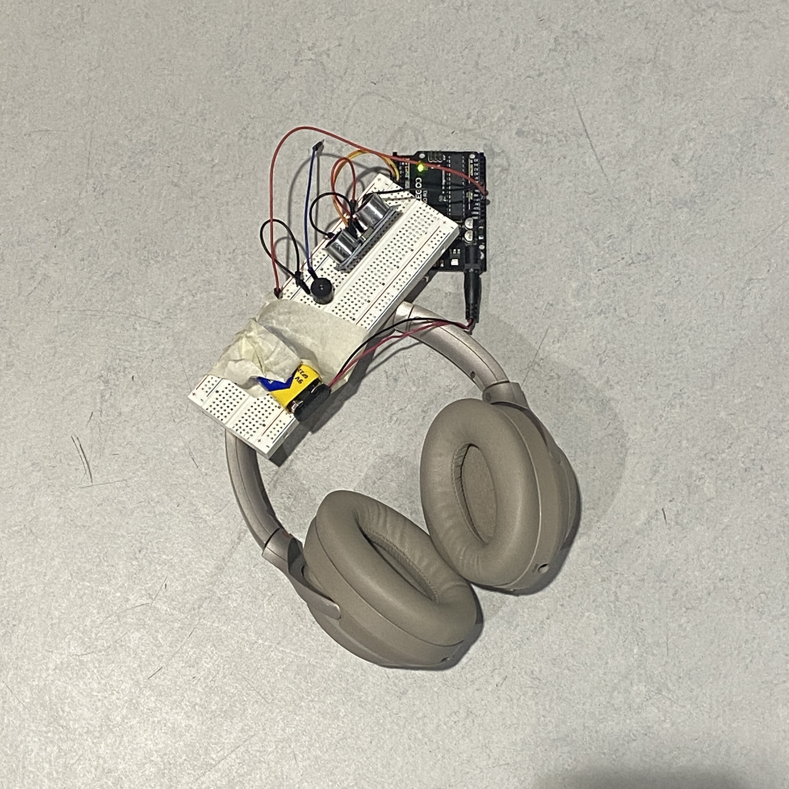
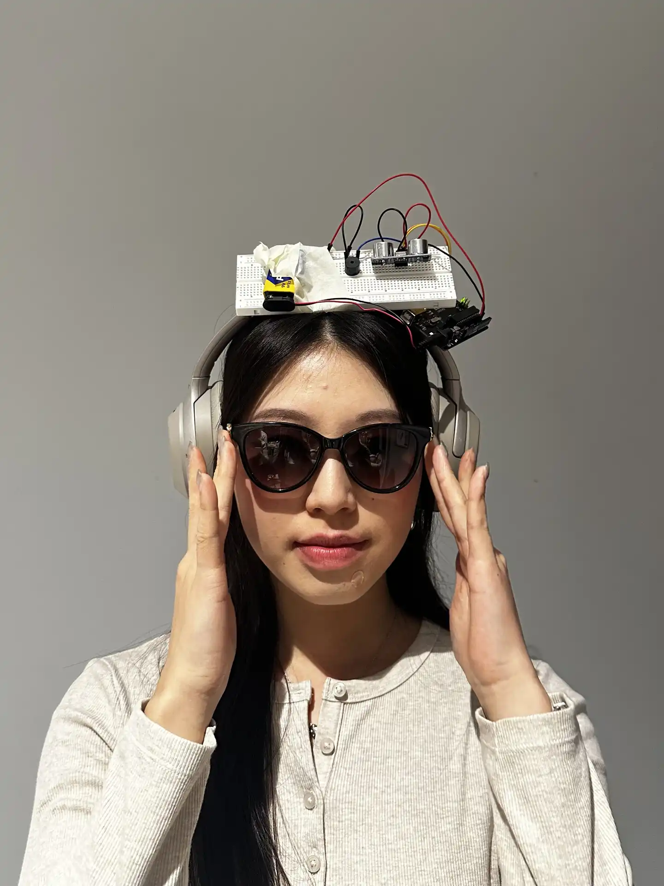

The social distance headphones detect when someone is toooooo close to you, and alerts them to stay away.
After the theremin exercise, we utilised the device to turn it into something more 'practical', a wearable accessory. Instead of the machine responding passively from human interventions, we can move through a space with the machine, and it responds dynamically to its environments.
- what if the wearable responded to your own movement or
stillness? Slow music when you're calm, erratic when you're
rushing.
- making DIY accessibility assistive techs that are affordable.
- wearing this on stage and have movement control sound or
lighting?
Overall this was a really fun exercise and I'm keen to keep exploring applications of arduino.

